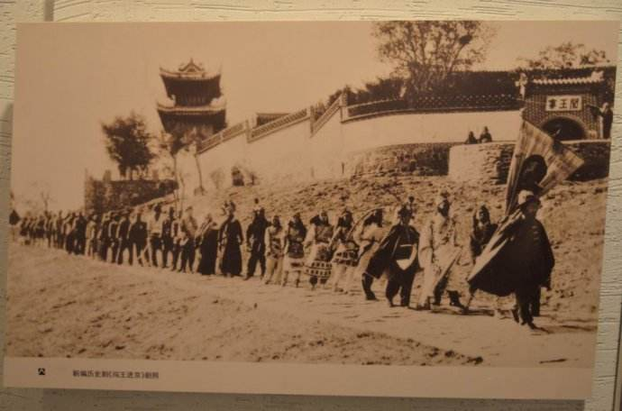
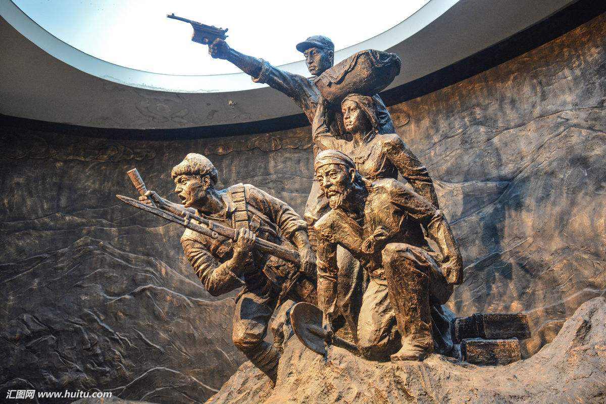

中国革命老根据地简称革命老区或老区，是指土地革命战争时间和抗日战争时期，在中国共产党和毛泽东等老一辈无产阶级革命家领导下创建的革命根据地



习近平主席指出，老区和老区人民，为我们党领导的中国革命作出了重大牺牲和贡献。
这些牺牲和贡献永远镌刻在中国共产党、中国人民解放军、中华人民共和国的历史丰碑上。
我们要永远珍惜、永远铭记老区和老区人民的这些牺牲和贡献，继承和发扬老区和老区人民的光荣传统，
为实现“两个一百年”奋斗目标、实现中华民族伟大复兴的中国梦而不懈奋斗。
习近平主席接着向参加会议的市县委书记们提出4个问题：
如何适应经济发展新常态、抓好县域经济发展？如何打好扶贫开发攻坚战、加快改善老区老百姓生活？
县一级如何在全面深化改革中积极作为、如何运用法治思维和法治方式推动工作？
如何继承和发扬老区光荣传统，切实加强和改进党的建设？
习近平主席希望大家围绕这些问题畅所欲言，讲自己感触最深、最真实的想法。
党的十八大以来，习近平主席多次前往贫困地区调研考察。
从地处太行山深处的特困村河北阜平县骆驼湾村、顾家台村，到甘肃渭源县元古堆村、东乡县布楞沟村，
再到湘西土家族苗族自治州十八洞村……总书记一直强调，领导干部要看真贫、扶真贫、真扶贫。
在这场座谈会上，习近平主席把扶贫攻坚任务进一步聚焦到革命老区，
深刻指出，一些老区发展滞后、基础设施落后、人民生活水平不高的矛盾仍然比较突出，
特别是老区还有数量不少的农村贫困人口，我们必须时刻挂在心上。
“我们实现第一个百年奋斗目标、全面建成小康社会，没有老区的全面小康，
特别是没有老区贫困人口脱贫致富，那是不完整的。这就是我常说的小康不小康、关键看老乡的涵义。”习近平主席说。
用好革命老区自身资源优势，大力发展特色产业，是实现脱贫致富的重要途径。

人民是国家的主人
是粗放扶贫的对称，是指针对不同贫困区域环境、 不同贫困农户状况，运用科学有效程序对扶贫对象实施精确识别、 精确帮扶、精确管理的治贫方式。一般来说，精准扶贫主要是就贫困居民而言的，谁贫困就扶持谁。
习近平主席说：“各族干部群众都要像爱护自己的眼睛一样爱护民族团结、像珍视自己的生命一样珍视民族团结。” “民族团结是各族人民的生命线...各民族要相互了解、相互尊重、相互包容、相互欣赏、相互学习、相互帮助，像石榴籽那样紧紧抱在一起。”